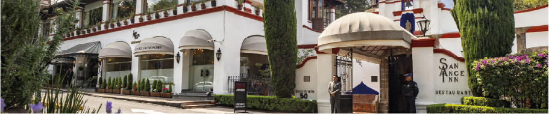
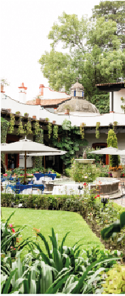

SAN ÁNGEL

El San Ángel Inn se ubica en una construcción que originalmente formaba parte de una hacienda y convento del siglo XVII, perteneciente a la orden religiosa de los carmelitas descalzos en la zona de San Ángel.
Durante la época colonial, San Ángel no era parte de la ciudad como tal, sino una zona rural conocida por: Sus huertas Sus ríos y vegetación Su tranquilidad, ideal para comunidades religiosas Los carmelitas establecieron ahí espacios para la vida religiosa y productiva, incluyendo cultivos y áreas de retiro espiritual.
Transformación con el tiempo Tras procesos históricos como las Leyes de Reforma en el siglo XIX (cuando muchos bienes de la Iglesia pasaron al Estado), la propiedad dejó de ser religiosa y comenzó a tener usos civiles. Con el crecimiento de la Ciudad de México, la zona de San Ángel se integró poco a poco a la ciudad, pero mantuvo su carácter tradicional. Ya en el siglo XX, la construcción fue restaurada y adaptada para convertirse en restaurante, conservando: La estructura original Patios y jardines Elementos arquitectónicos coloniales
